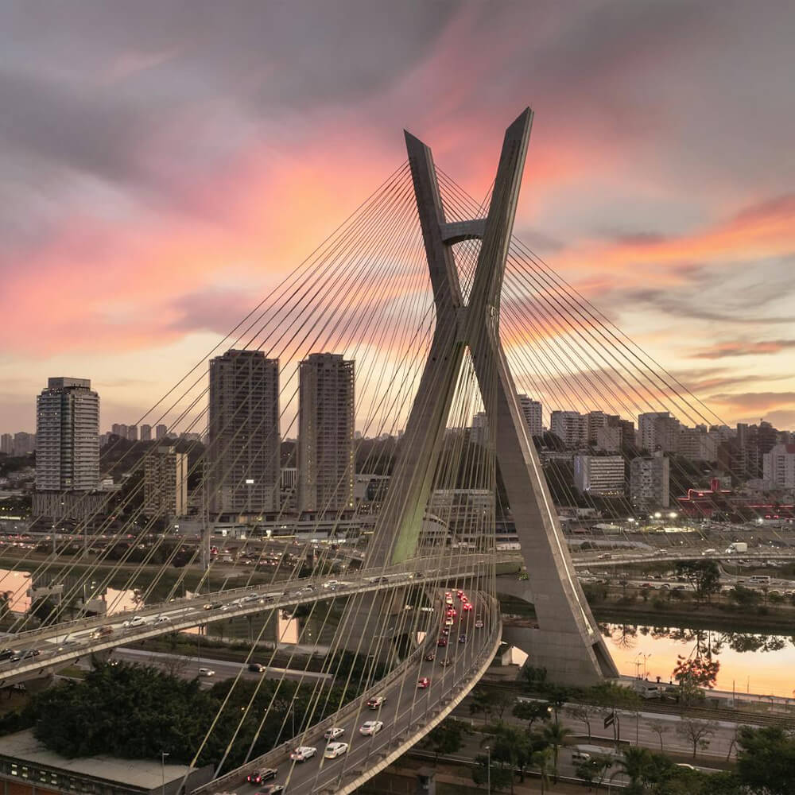

São Paulo
São Paulo is the most populous city in Brazil and the capital of the state of São Paulo. It exerts strong international influences in commerce, finance, arts, and entertainment. The city's name honors the Apostle, Saint Paul of Tarsus. The city's metropolitan area, the Greater São Paulo, ranks as the most populous in Brazil and the 12th-most-populous on Earth.
Wikipedia